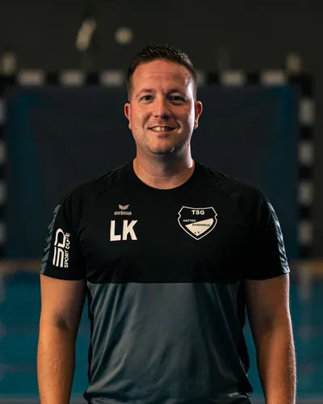
1. Herren in der Oberliga Nord
Saison 2026/27 mit 21 Spielern, viele davon aus der eigenen Jugend. Heimspiele im Sportzentrum Sandkrug.
Heimspiele im Livestream (öffnet in neuem Tab)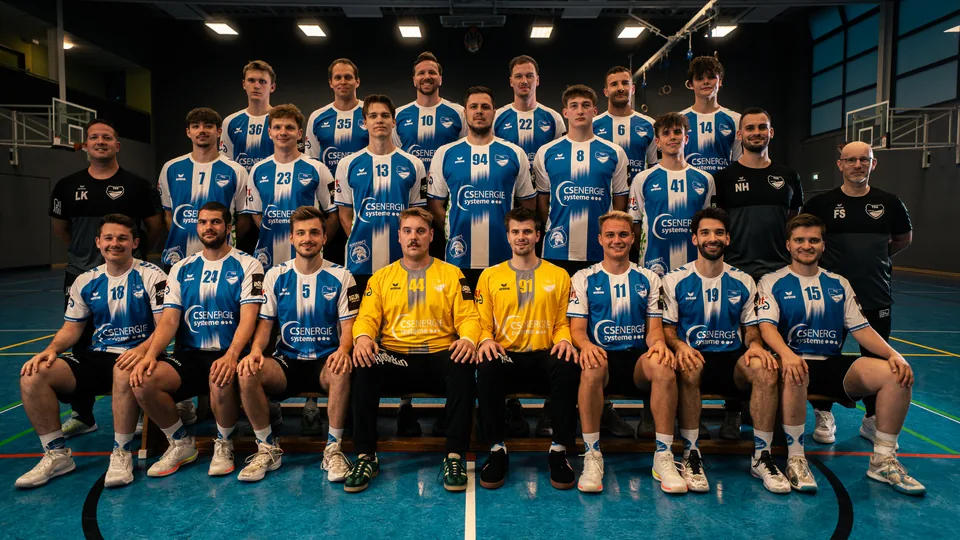
Spielplan und Tabelle
Spielplan und Tabelle werden geladen …
Kommende Spiele
Die nächsten Spiele stehen noch nicht fest.
Kader 2026/27
-
 Nummer 1
Nils Buschmann
Torwart
Nummer 1
Nils Buschmann
Torwart
-
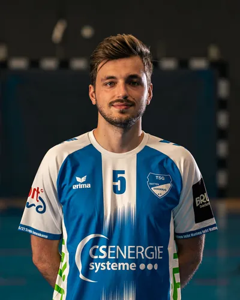
Nummer 5 Hendrik Helge Küpker Rechtsaußen -
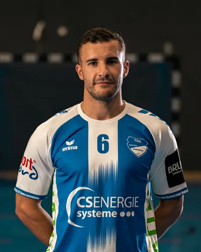
Nummer 6 Markus Zindler Rückraum links -
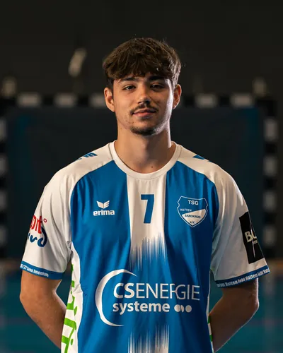
Nummer 7 Finn Habich Rückraum Mitte -
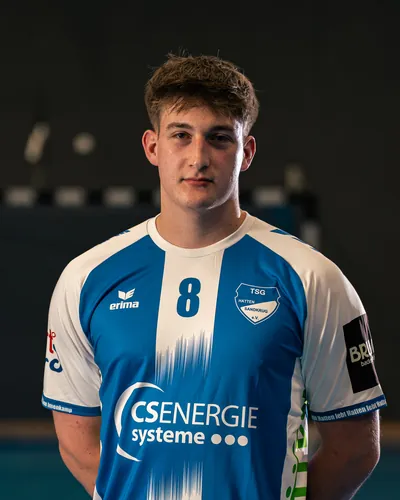
Nummer 8 Max Reinold Rückraum links -
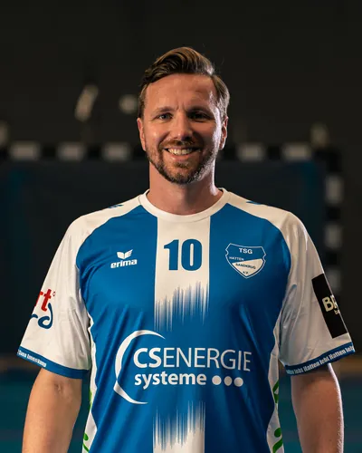
Nummer 10 Bernd Spille Kreis -
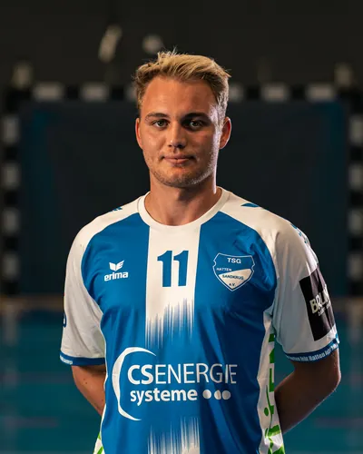
Nummer 11 Jonas Lohner Linksaußen -
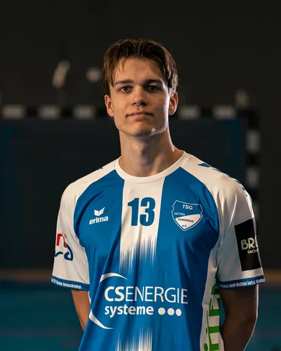
Nummer 13 Paul Bruns Rückraum links -
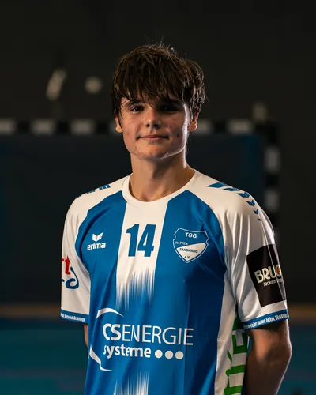
Nummer 14 Jonas Kammerer Rechtsaußen -
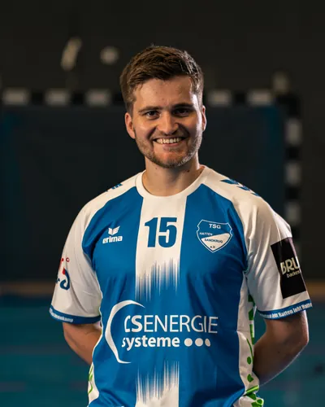
Nummer 15 Silas Linnemann Linksaußen -
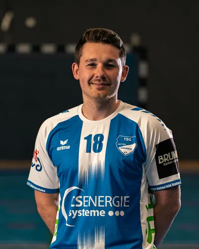
Nummer 18 Jan Nowosadtko Rückraum Mitte -
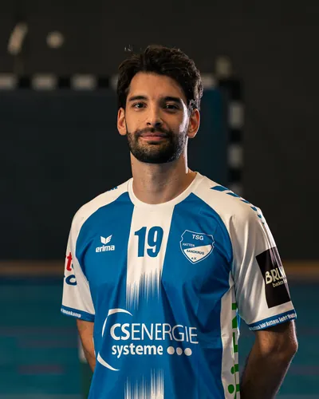
Nummer 19 Luc Neumann Linksaußen -
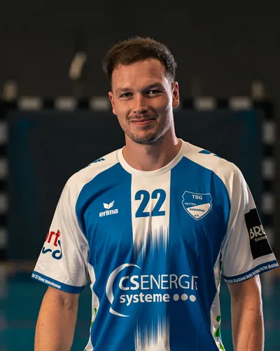
Nummer 22 Lasse Thünemann Kreis / Rückraum -
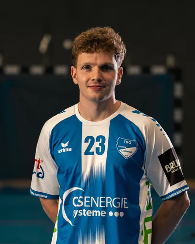
Nummer 23 Florian Cordes Rückraum Mitte -
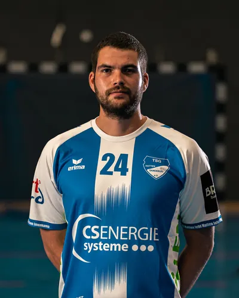
Nummer 24 Friedrich Seidel Rechtsaußen -
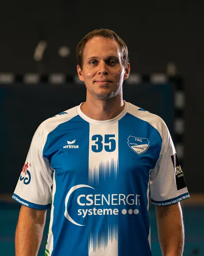
Nummer 35 Christoph Stüve Rückraum rechts -
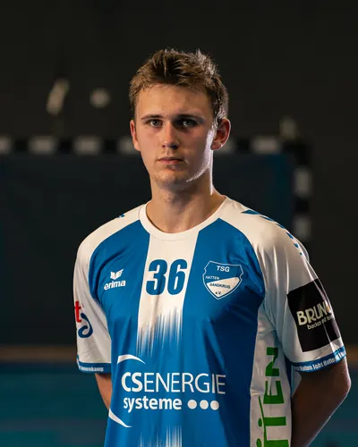
Nummer 36 Quentin Tschirner Rückraum rechts -
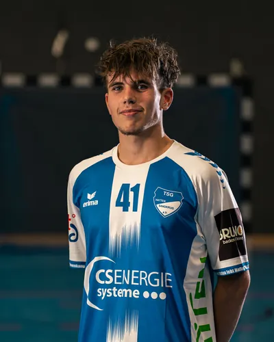
Nummer 41 Fiete Bremer Rückraum Mitte -
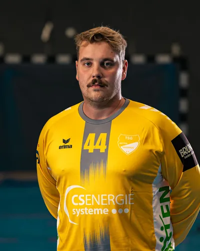
Nummer 44 Thies Stolle Torwart -
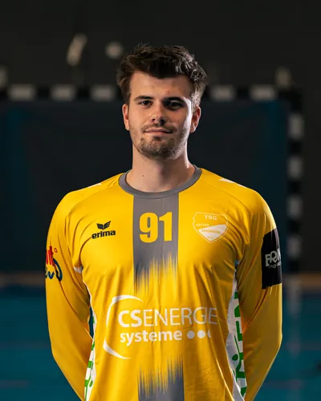
Nummer 91 Ferdinand Franz Torwart -
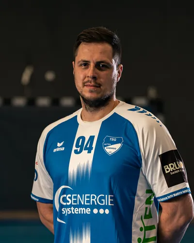
Nummer 94 Philipp Vallei Kreis
Trainer und Staff
Bernd Spille
-
Hauke Rickels
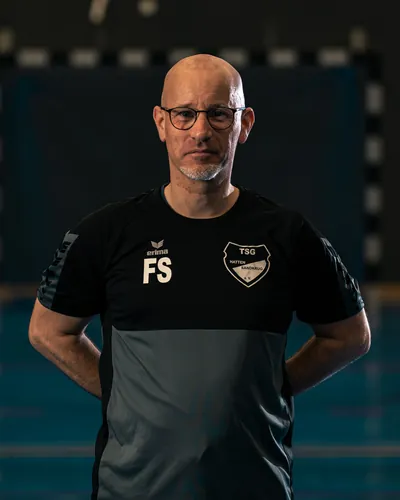
Frank Schwarzer
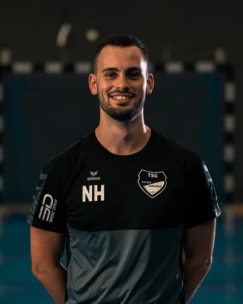
Niklas Hönicke
Fragen an das Trainerteam? Schreib uns an handball@tsg-hatten-sandkrug.de.